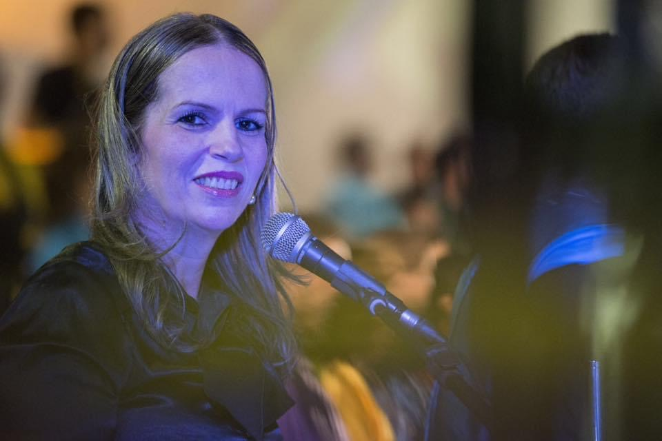
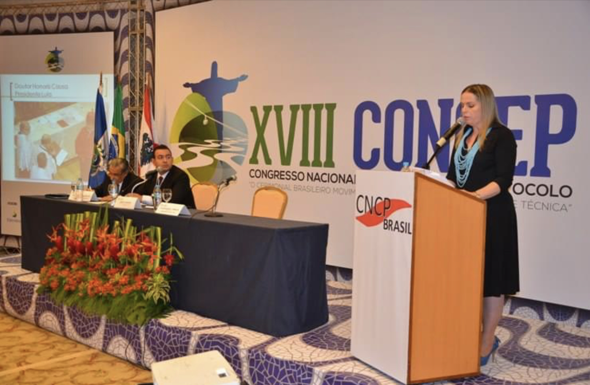
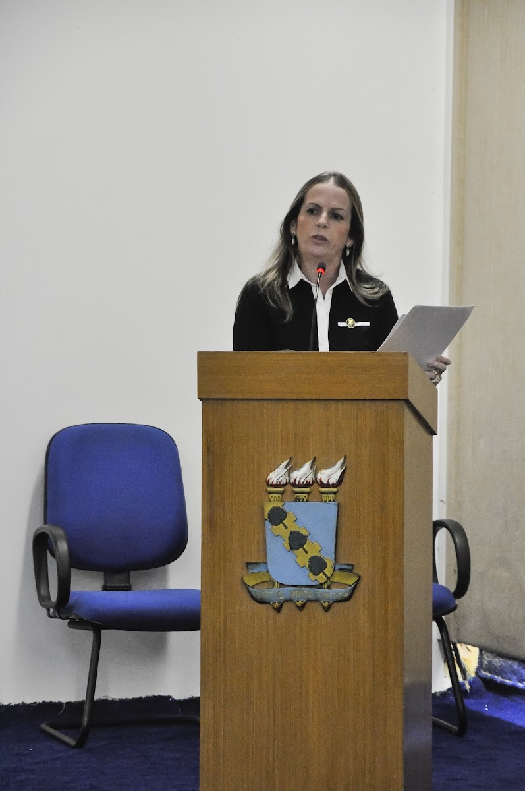
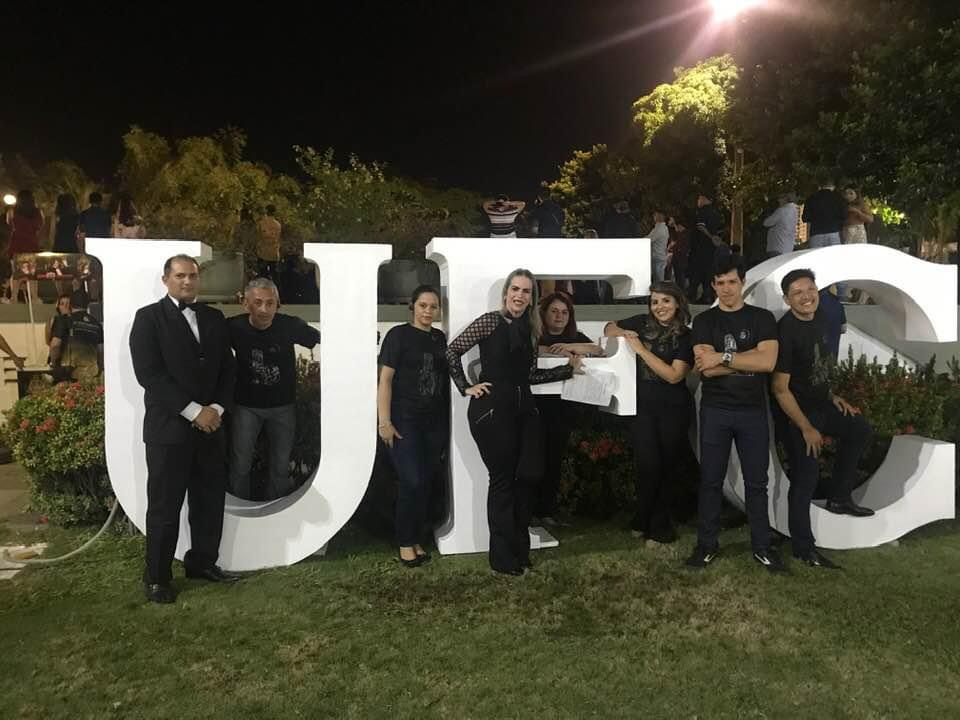

Cláudia Lordão planeja e conduz cerimônias com rigor nos ritos e elegância na apresentação.
Ordem de precedência, composição de mesa e roteiro da solenidade.
Condução e apresentação do evento, com voz e postura à altura da ocasião.
Planejamento e execução de solenidades, congressos e cerimônias.



Registros de eventos conduzidos por Cláudia Lordão.
Os eventos com Cláudia Lordão são impecáveis, além do conhecimento de todos os protocolos.
Avaliação no GoogleExcelente e gabaritada profissional, sempre eficiente e atenta aos ritos do Cerimonial.
Avaliação no GoogleExcelente profissional e apresentadora de eventos.
Avaliação no GoogleResponda 5 perguntas e envie o pedido de orçamento pelo WhatsApp, já organizado.
WhatsApp: (85) 98776-0741
Endereço: R. Israel Bezerra, 511 · Dionísio Torres, Fortaleza - CE